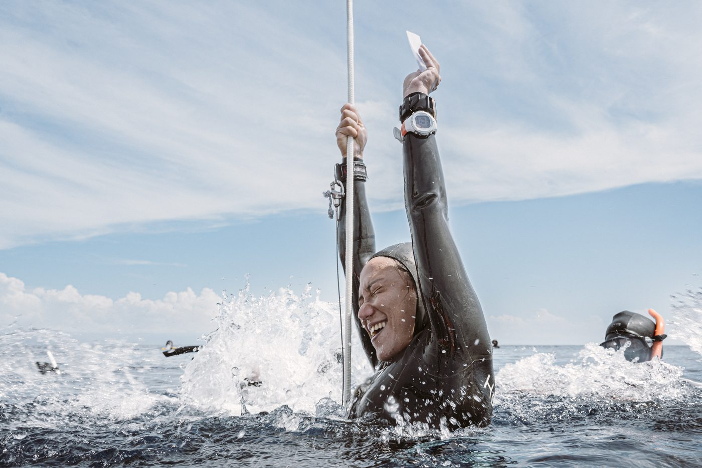
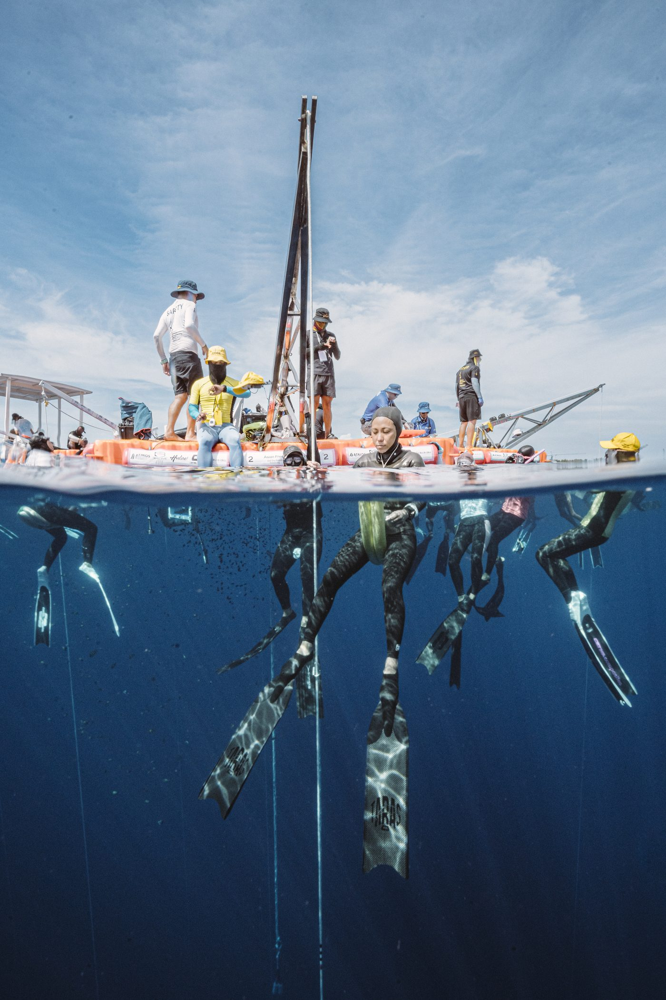
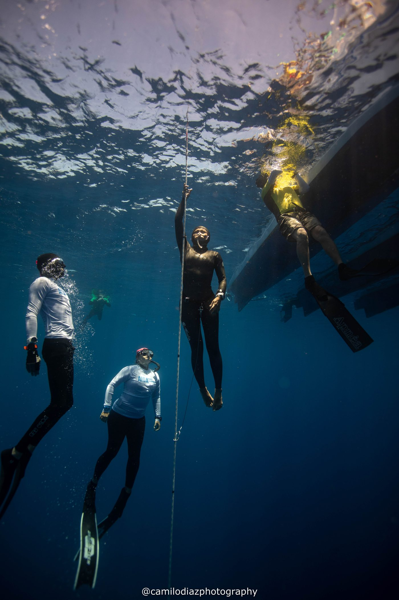
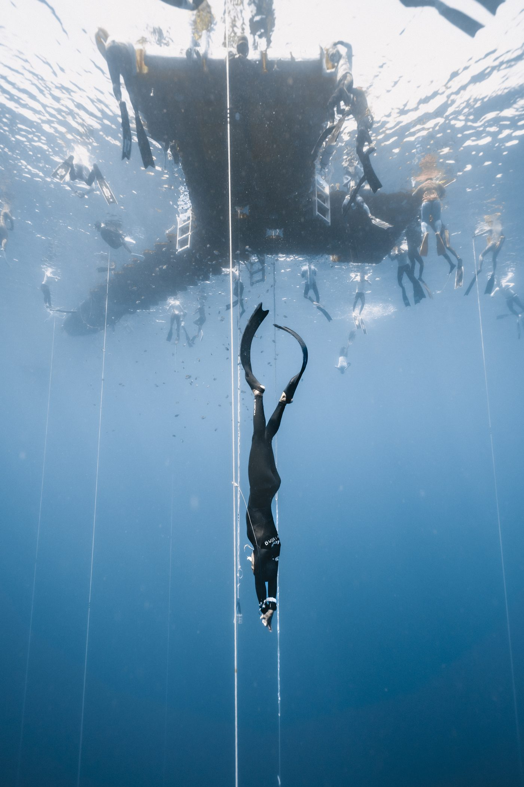

01我的故事
深度白牌之旅
自從接觸了自由潛水就覺得很貼近我的內心，精進水中的技巧也得到許多成就感，遂不顧一切的栽進這個世界，脫離了朝九晚五的工作，在2019年成為專職自潛教練，用熱愛支撐起我的生活。早期積極參與大型賽事，世界錦標賽多在歐洲、中美洲等地舉行，所費不貲，憑一股傻勁我每年積極爭取代表台灣出賽，持續朝向目標深度前進，更是榮幸能為台灣參與國際運動賽事盡一份力。後來這幾年隨著下潛深度的推進，以及經費因素考量，更多在菲律賓邦勞島訓練，專注挑戰更大的深度，也在2024年成為教練訓練官，將自潛理念與安全更多的傳遞下去。不過跨越到一定的深度，技術與體力的考驗是嚴苛，也必須投注更多時間精力以訓練強化自身能力，教學與訓練變得越來越難以兼顧。對深度的嚮往仍是不斷推著我前進，2025年的目標即是將台灣女子深度推進到百米，追上亞洲頂尖選手，書寫屬於台灣的榮耀篇章。
在自由潛水的路上，也不是一帆風順。曾經因為嚴重的鼻竇炎開刀手術，整整一個月不能下潛，當年度幾乎無法推深，只好改變戰略專攻較弱的項目，倒也有一番收穫，也更加用心將身體健康置為首要。截自2025年8月，歷年成績總計79張白牌、12張紅牌、4張黃牌。整體來看白牌率還是不錯，較少犯技術性的錯誤，為求目標奮力一搏的積極度還是有的。隨著深度增加，訓練方式與精神力需要不斷調整，以求更好的穩定度與進步幅度。相較其他運動，自由潛水的核心精神顯得獨樹一格，幾乎很少跟對手正面交鋒，而是專注精進能力的同時，自然而然地超越自我與紀錄。秉持著運動員正面的品格態度，我會繼續豐富我的經驗，成為更優秀的自由潛水運動員。



